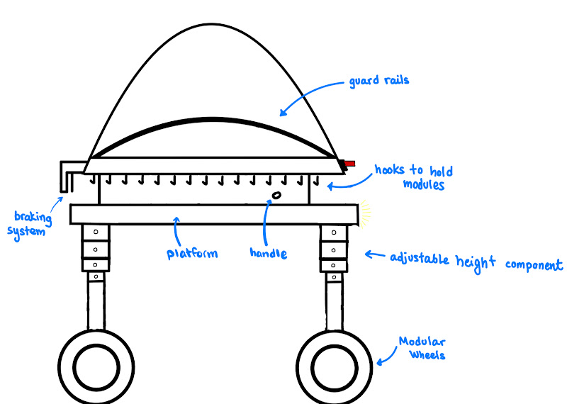
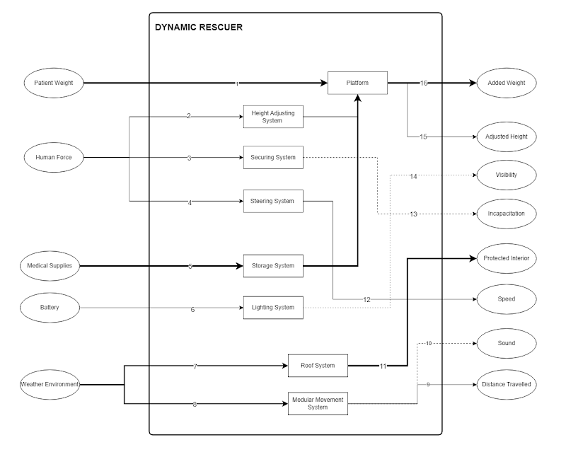
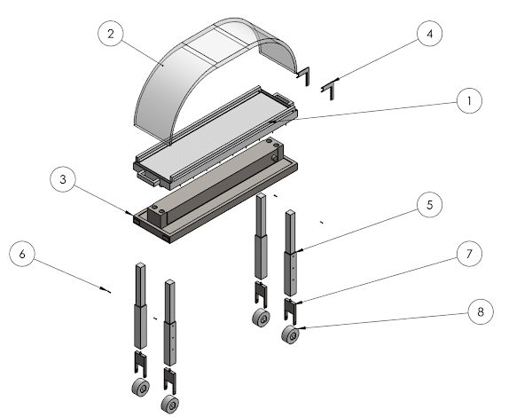

Mechanical design
Dynamic Rescuer: an all-terrain patient carrier
Stretchers are built for flat ground. Our team designed a modular system that carries an incapacitated person through urban disaster sites and wilderness terrain, and can switch between rolling and hand-carrying in seconds.

The brief
A multinational NGO working with the World Health Organization asked us to rethink how incapacitated people are moved. Stretcher designs have barely changed in centuries and break down off flat ground: in rubble, mud, snow, floodwater or rough trails. The system had to work in two situations, urban disasters and wilderness injuries, stay comparable to existing products in durability and cost, and protect the safety, comfort and dignity of both the paramedics and the patient.
My role
- Research and analysis behind the design brief, users and requirements
- Building the detailed 3D model in SolidWorks
- Writing one of the six personas and its use case: an experienced paramedic reaching a paralyzed snowboarder stuck in deep snow on a ski hill
- Documenting the product development process in the design report
- Creating the team’s design plan and timeline so milestones stayed achievable
How we designed it
We worked in three design loops: six individual concepts, six refined concepts, then one integrated design. Every change was logged in a design change record.
1. Start from the people using it
We built six personas, three paramedics and three patients, and placed each in a realistic rescue:
- A 5 ft paramedic reaching a car crash where the ambulance can’t get close
- A 6 ft 7 army medic carrying a stroke patient down an aircraft’s mobile staircase
- An elderly woman with arthritis trapped in a partly collapsed building
- A young wheelchair user caught in a flash flood at home
- A young man with autism who can’t tolerate being touched, inside a house fire
- An experienced paramedic, slowed by stress and complex equipment, reaching a paralyzed snowboarder in deep snow
These scenarios exposed needs a spec sheet would miss: very short and very tall paramedics sharing one carrier, stairs and narrow doors, patients who panic in enclosed spaces, and operators under time pressure who need fewer parts to get wrong.
2. Turn needs into numbers
We wrote about 30 situational and internal requirements, each backed by a source. A selection:
| Requirement | Target | Why |
|---|---|---|
| Patient load | Up to 159 kg | Standard limit of reference stretchers |
| Envelope | 2134 × 610 mm | Standard stretcher size that fits ambulance-ready elevators |
| Working height | 64.3 to 119.0 cm | 5th percentile female knuckle height to 95th percentile male elbow height |
| Empty weight | 50 kg max, bed alone 14 kg | Paramedics are certified to carry 50 kg up and down stairs |
| Hold on a slope | 30° grade, wheel friction 0.58 to 1.00 | tan 30° = 0.577, the minimum static friction to stay put with brakes on |
| Brake trigger | 15 to 25 mm from the grip | Room for gloved fingers, close enough to brake without letting go |
| Terrain | 46 cm standing water, 20 cm snow, 5 km range | Flood depths, Toronto snowfall data, average lost-hiker distance |
| Environment | −45 to 56.7 °C, 40 to 95% humidity | Coldest inhabited region to hottest recorded temperature |
| Lighting and noise | 200 to 500 lux, 82 dB max | Enough light for close work without dazzling; quiet enough for patients sensitive to sound |
| Storage | At least 42.7 L | Volume of a standard EMT trauma kit |
3. Combine the best ideas into one concept
A morphological chart laid out every way our concepts solved each function (restrain the patient, steer, light the way, adjust height, cross terrain, shield from weather), and we picked and merged the strongest:
- Analogical design: the canopy took its cue from the bubble canopy on military aircraft, and the thick rubber wheels from aircraft landing gear.
- SCAMPER: the folding frame in earlier concepts was replaced by height-adjustable legs, which do the same job of shrinking for storage while also fitting each operator.
- Design by attribute: fixed handles that forced a tall and a short paramedic into bad postures became modular steering handles, plus built-in handles on the bed for carrying.
- Merging two concepts: one concept’s hooks for add-on modules and another’s shelving unit were both kept, giving modularity and more storage than a full trauma kit needs.

4. Map the system
A subsystem identification matrix tied each function to the parts that deliver it, and a system diagram traced every input (patient weight, human force, medical supplies, battery, weather) through the subsystems to its output. It included the bad outputs, like added weight and noise, so we designed against them instead of ignoring them.

The design
- Roll it or carry it. The polyethylene bed slides onto the steel frame on circular rods. Where wheels can’t go, paramedics lift the loaded bed off by its built-in handles and hand-carry it, as they are trained to.
- Fits every operator. Telescoping legs lock with a pin at three heights, from 600 to 1170 mm, so patients aren’t lifted high or lowered far. Modular steering handles mount on the frame or the bed.
- Brakes in the grip. A trigger directly in front of each grip applies two brake pads per wheel mount.
- Restraints that meet the standard. Instead of designing new straps, we specified Ferno 430 Series restraints, adjustable from 406 to 2743 mm and threaded through the bed’s guard rails, with the quick release Ontario’s ambulance standards require.
- A canopy that comes off. The 800 mm tall acrylic canopy is clear so the operator can see ahead, and detaches without tools so the carrier still fits through doors.
- Storage built into the frame. A 73.1 L compartment with side doors holds a standard Canadian EMS trauma kit (about 42.8 L) with room to spare, plus hooks for add-on modules.
- Materials chosen for the job. AISI 1045 steel frame and wheel covers (585 MPa tensile), polyethylene bed and legs, natural rubber handles and wheel treads, and high-beam LED lights on user-replaceable 9 V lithium-ion batteries rated from −20 to 60 °C.

| Item | Part | Description | Qty |
|---|---|---|---|
| 1 | Bed | Custom, polyethylene | 1 |
| 2 | Canopy | Custom, acrylic | 1 |
| 3 | Frame | Custom, AISI 1045 steel | 1 |
| 4 | Handle | Custom, natural rubber | 2 |
| 5 | Leg | Custom, polyethylene | 4 |
| 6 | Button head hex drive screw | Off the shelf, McMaster-Carr 92095A294 | 4 |
| 7 | Wheel cover | Custom, AISI 1045 steel | 4 |
| 8 | Wheel | Custom, natural rubber | 4 |
Trade-offs we made
- Wheels over swappable attachments. We first planned legs that could take skis or tracks. Swapping parts under time pressure costs time and invites fastening mistakes that can make the unit fail, so we settled on rubber casters, the most versatile option. Soft rubber also absorbs shock, which let us drop a separate suspension.
- A roof, not an enclosure. A full canopy protected patients from rain but could make patients with autism or claustrophobia panic, so it became a roof only.
- Off-the-shelf where it already works. Inflatable comfort pillows for patients with autism were cut, because any standard inflatable pillow does the job. Restraints and screws were bought, not designed.
- Fewer fasteners. The design brief required modularity, so we kept the number of fasteners to a minimum so a stressed operator can assemble it quickly and correctly.
Who it excludes
We walked the full setup, use and put-away sequence through the Cambridge Exclusion Calculator to estimate the share of people each step would exclude. Merging the concepts brought strength and dexterity exclusion down from at least 9% in most loop 2 concepts to 5.9%, and walking and mobility from at least 13% in four of six concepts to 11.6%.
| Demand | Hardest step | Excluded |
|---|---|---|
| Vision | Attaching the steering handles at the right height | 0.9% |
| Concentration and memory | Fitting modules and setting leg height quickly | 4.0% |
| Strength and dexterity (non-dominant hand) | Loading and restraining the patient | 5.2% |
| Strength and dexterity (dominant hand) | Lifting the loaded bed off and carrying it | 5.9% |
| Hearing | Steering while talking to a partner in a noisy scene | 6.4% |
| Walking and mobility | Steering long distances over rough ground | 11.6% |
What we had to fix along the way
Each issue was logged in the design change record and resolved in the next loop.
- Loop 1: four concepts had underspecified brakes, three swayed because they had no shocks or suspension, and three had no patient restraints. Human-factors reviews also flagged controls that looked too similar and status indicators that were hard to read in poor light.
- Loop 2: one wheel design broke the 82 dB noise limit, a full canopy excluded claustrophobic patients, and one base ignored leg length so the patient’s legs hung off the end.
Where it fell short
The final review was honest about what the integrated design didn’t yet meet:
- It ran 33 mm too wide and 121 mm too long for the 2134 × 610 mm envelope.
- The CAD model’s mass properties came out wrong because of a modelling error, so we couldn’t confirm the 50 kg empty weight from the model.
- Fixed casters and pin-set legs limit how far it can go in deep snow or floodwater, short of the original terrain goals.
- Setting the pins and reaching the storage under the bed both mean bending down, which adds back strain and strength demand.
The next iteration would shrink the frame into the envelope, rebuild the model with correct material assignments to verify weight, and replace the pins with a lever-actuated height adjustment operated from handle height.
Conclusion
The Dynamic Rescuer meets the brief’s core goal: one system that rolls where it can and is carried where it can’t, sized for the full range of paramedics and built around the patient. Its biggest decisions, like adjustable height, modular steering handles and a roof-only canopy, came from the personas and exclusion analysis rather than from geometry alone. Three design loops turned early safety gaps in braking, stability and restraint into resolved features, and the final review set out clearly what the next version needs to fix.
The full design report and SolidWorks files aren’t posted here. Email me if you’d like to know more, or see the write-up on GitHub.
Back to all projects